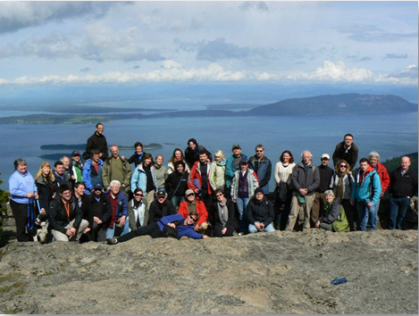

Acknowledgements
We are grateful to the support of the Richard Lounsbery Foundation which funded the development of the Visual Soundings website. Most importantly the support of the foundation breathed life to our idea of promoting seafloor imagery as art.
The Richard Lounsbery Foundation aims to enhance national strengths in science and technology through support of programs in the following areas: science and technology components of key US policy issues; elementary and secondary science and math education; historical studies and contemporary assessments of key trends in the physical and biomedical sciences; and start-up assistance for establishing the infrastructure of research projects. Among international initiatives, the Foundation has a long-standing priority in Franco-American scientific cooperation.
Visual Soundings would not have been possible without our collaborators. The images on this site were contributed by scientists associated with GeoHab (www.geohab.org), an international organisation of marine scientists engaged in marine benthic habitat mapping. GeoHab includes scientists from leading institutions around the world and the contributions to this site are thanks to these scientists and their host institutions.
The Explore the Oceans map in this website shows the areas from which we have sourced our images to date. It demonstrates diversity and the global nature of seabed imagery.
Visual Soundings is not a static website and we welcome further image contributions from around the world. Please contact the editors if you are interested in contributing to Visual Soundings.

GeoHab participants on Mt Constitution May 2012 Orcas Islands USA – where the inspiration for Visual Soundings was born